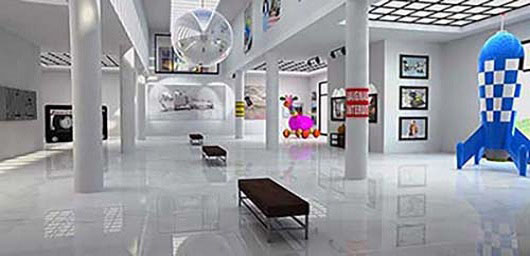

Explore together with us at the community science museum

Explore together
Come join us at the Community Science Museum where we’re committed to
making science accessible to all. Over the course of human history,
science has developed from our early understanding of fire, wind,
water, and earth to exploring everything from galaxies far away to the
very building blocks of life itself. The aim of our museum is to
create a space where everyone can experience the wonders of our
discoveries and perhaps even ignite a lifelong passion to continue the
exploration of the world around us. We believe science should not be
confined to the textbook, but brought to live through exhibits. This
is why we have over 1000 different exhibits on the many varied
subjects of science to explore. Many of these exhibits are designed
for you to interact with and play around to see science come to life
(apart from the dinosaur exhibits – they only come to life at night
when everyone’s gone home).